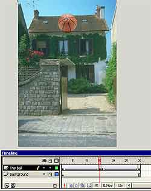

Flash 5. Шаг шестой: Motion Tweening

Принципиально любая анимация представляет собой чередование
кадров. И не важно, что это за анимация, нарисована она руками или сделана в
какой-либо программе, суть от этого никак не изменяется — мы видим чередование
статичных картинок через определенный период времени.
Но
анимация все же дифференцируется и классифицируется. Если итоговый продукт —
это одно и то же (если брать уже уровень вывода, а не хранения), то что
выступает в качестве основания для такого деления? Ответ прост — способ
генерации и особенности построения.
Да, именно исходя из того, каким
способом получена анимация, что ее образовывает, происходит деление. В
компьютерной графике деление идет по нескольким векторам, основные из которых
— двумерная или трехмерная, растровая или векторная.
Если же рассматривать
непосредственно flash-анимацию, то, несмотря на возможность внедрения
растровых фрагментов, ее относят к векторной, так как основные изменения в
большинстве работ все же описаны пользователем не по кадрам (что характерно
для растровой), а за счет задания опорных кадров и свойств объектов в этих
опорных кадрах.
Читатель может спросить — разве можно делить по такому
принципу? В трехмерной графике, например, 3D Max также задаются ключевые кадры
и свойства для объектов в них. И при этом продукт — чистейшая растровая
графика.
Отвечаем на этот гипотетический вопрос. Во-первых, Max может
генерировать и векторную анимацию — хотя бы тот же VRML.
В этой
программе действительно сначала мы работаем именно по правилам векторной
графики. Но потом-то происходит процесс рендера, то есть прорисовки, и
программа генерирует кадр за кадром как растровые картинки.
Как уже
говорилось в одной из прошлых статей, flash-анимацию можно искусственно
поделить на три вида. Это:
1. Покадровая анимация. Она используется редко.
Этот тип был описан в одной из прошлых статей.
2. Motion Tweening. Анимация
движения. Это тема сегодняшней статьи.
3. Shape Tweening. Про нее мы
поговорим в следующей статье.
Из них именно Motion Tweening используется
наиболее часто.
Так что это такое? Попробуем разобраться в сравнении с уже
описанной покадровой анимацией. Что бы мы делали при необходимости нарисовать
катящийся шар?
Создали бы объект и передвигали бы его на каждом кадре
немного в сторону, предварительно определив, на сколько именно. Долго и нудно.
Поэтому пошаговый метод применяется несколько в других ситуациях, в основном
не связанных с большим количеством кадров. Например, когда необходимо создать
эффект, описанный несколько статей назад, а именно постепенное появление
объектов, одного за другим. В этом случае никак не задашь первый и последний
кадр, так как добавление новых фрагментов изображения не произойдет.
Для
реализации задачи методом Motion Tweening достаточно задать два кадра — первый
и последний. Все остальные программа "додумает" сама, исходя из
настроек.
Суть Motion Tweening — координатное изменение положения объекта.
Вы задаете начальную точку, последнюю, траектория определяется
автоматически.
Правда, есть возможность задать весь путь самостоятельно,
используя кривые. Но это тема отдельной статьи, про это мы поговорим немного
позже, через пару номеров.
То есть правдиво название метода — изменение в
движении. В этом основное отличие Motion Tweening от Shape Tweening — там в
основе метода именно изменение формы. В Motion Tweening можно, правда, менять
габариты объектов, но для векторной графики изменением формы это назвать ну
никак нельзя.
Как и все, лучше объяснить на практике. Поставим задачу —
отобразить прыгающий мяч, причем при движении вверх скорость его должна
уменьшаться (действие земного притяжения), при движении вниз мяч должен
ускоряться.
Первое, что нужно, — непосредственно мяч. Вы можете не мудрить
и использовать просто круг с линиями или вытащить объект из какой-либо
библиотеки (можно использовать библиотеки Corel Draw и Adobe Illustrator —
Flash понимает эти форматы).
Мы же решили использовать растровый мяч. Так
как файл учебный и размер его значения не имеет, то это вполне допустимая
вольность. Единственная тонкость — мяч должен быть на прозрачном фоне. Flash 5
имеет проблемы с пониманием прозрачности у Tiff, поэтому лучше использовать
Gif.
Далее подберите будущий фон. Пусть это будет растровая картинка с
видом на открытую местность. Откройте ее в Photoshop и уменьшите разрешение до
экранного (72 пикселя на дюйм), а размеры — до небольших. Посмотрите общее
число пикселей по длине и ширине и сохраните преобразованный
файл.
Подготовительный этап закончен. У нас есть два точечных
рисунка.
Откройте Flash. Прежде всего наложим фон. Но для этого нужно
задать документу подходящие пропорции (программа сразу открывает документ с
установками по умолчанию).
Для этого найдите на полосе анимации место, на
котором отображена частота кадров. В приведенной иллюстрации это 12.0 fps.
Кликните два раза по этому фрагменту. Откроется окно параметров документа, в
котором можно будет изменить размеры.
Введите туда те значения, которые
только что посмотрели в Photoshop у картинки фона.
Теперь можно загружать
задний план. Для выполнения этой операции нельзя воспользоваться командой Open
(Открыть). Поэтому нужно идти одним из двух путей.
Либо скопируйте рисунок
в любой другой программе в буфер обмена, а потом вставьте во Flash, либо
запустите команду Import: File->Import (Файл->Импорт).
После того,
как фон вставится, придется немного подровнять его. Растровые фрагменты в этом
плане не слишком отличаются от векторных, и поэтому можно воспользоваться
инструментом Arrow Tool.
После того, как фон водворен на место, нужно
сделать так, чтобы он был виден на протяжении всей анимации. Обычно длина
анимации неизвестна и подобные операции производятся не сразу, но в данном
случае мы знаем длину — 30 кадров.
Поэтому вытяните мышкой движок анимации
от первого к 30-му кадру. Скопирутйе первый кадр (Ctrl+C) и вставьте его
(Ctrl+V). Вот и все. Этот способ немного кривоватый, но зато наиболее
быстрый.
После этого необходимо фон закрепить, чтобы он не двигался. Для
этого около названия слоя нажмите возле пиктограмки с изображением замка. Слой
закрепится. Теперь он не подвергается редактированию.
Перейдем к мячу.
Создайте новый слой (все в той же анимационной полосе). Лучше его назвать
сразу понятней, в нашем случае — The ball. Импортируйте мяч.
Если он
смотрится правильно, значит, прозрачность прошла без проблем. Вам сразу,
скорее всего, придется изменять линейные размеры мяча, подгонять масштабы. Для
этого вполне подойдет стандартная возможность под названием
Scale.
Установите мяч в нижнее положение. Относительно этого никаких
рекомендаций дать не можем, определять хорошую точку нужно интуитивно.
Для
того, чтобы начать делать анимацию в режиме Motion Tweening, предварительно
нужно объект сделать объектом Motion Tween. По сути, это объявление программе,
какой тип анимации мы хотим использовать.
Для этого, предварительно выделив
мяч, выполните: Insert->Create Motion Tween. Bounding box вокруг объекта
должен стать синим. Синий цвет вообще много где еще во Flash примета того, что
это Motion Tweening.
Далее нужно полностью повторить операцию, проводимую
нами для фона, но уже до 15-го кадра. На нем перетяните мяч в верхнее
положение.
Примета того, что все получилось, — два опорных кадра должны
связаться линией со стрелкой на конце. Вы можете увидеть такую на приведенной
иллюстрации.
Нажав "Enter", убедитесь, что мяч действительно двигается, и
двигается правильно.
Примерно таким же образом создайте и 15 кадров
движения мяча вниз. Конечный вид анимационной шкалы можно увидеть на
иллюстрации.
Проверьте анимацию на этом этапе. Убедитесь, что в последнем
кадре мяч становится в то же самое место, откуда начинал прыгать. Учтите, что
анимация у нас повторяющаяся, это очень важно.
Половина работы, причем
сложнейшая, сделана. Мяч прыгает. Но при этом он должен замедляться при
движении вверх, ускоряться при движении вниз и вращаться.
Начнем с
первого.
В полосе анимации сделайте активным первый кадр. Откройте палитру
Frame (Кадр). С ней мы и будем работать все оставшееся время. Убедитесь, что
тип движения задан как Motion (Tweening->Motion).
За ускорение отвечает
настройка Easing. Пользоваться ей очень просто. При положительных единицах
скорость замедляется, при отрицательных — увеличивается.
Для данного случая
нам нужно максимальное положительное значение — 100. Это значит, что к концу
движения скорость придет к нулевой, что и происходит при вертикальном
движении.
Измените этот параметр и снова проверьте анимацию. Мяч должен
двигаться вверх уже куда более естественно.
Далее нужно настроить движение
мяча вниз. Алгоритм тот же — выделяем первый кадр второй части анимации и
выставляем настройки. Только на этот раз мяч должен двигаться с ускорением,
поэтому нужно выбрать максимальное отрицательное значение, то есть —
100.
Снова проверьте фильм. Причем на этот раз лучше это сделать командой
Test Movie из подменю Control — можно будет посмотреть, качественно ли
зациклена анимация.
С ускорением мы справились. Осталось последнее —
вращение.
За вращение тела вокруг собственной оси в той же палитре отвечает
настройка Rotate. Она состоит из двух частей — в первой определяется
направление вращения, то есть по часовой стрелке или против, во второй —
скорость.
Подобрать скорость придется на глаз. В нашем случае неплохо
получалось со значением 4, но нет никой гарантии, что для вашей анимации это
будет так же.
Затем выделите снова первый кадр и выставьте необходимые
настройки. Потом первый кадр второй части. Проверьте всю анимацию. Если
хорошо, то работа выполнена.
Вообще, это более чем примитивный пример.
Скоро мы опишем, как сделать так, чтобы мяч двигался действительно
естественно, то есть чтобы высота его полета с каждым скачком становилась все
меньше и меньше, пока он не остановится совсем. Но для этого понадобится язык
программирования Action Script, который будет описан в конце серии.
При
сохранении этой анимации главное не пережать JPEG — иначе появившийся муар все
испортит.
У нас итоговый вес файла — 37 Kb. Это очень неплохо, учитывая,
что использовались исключительно растровые фрагменты.
Следующая статья
будет посвящена последнему и самому интересному (на наш взгляд) типу анимации
— Shape Tweening.
Галина Корабельникова, [email protected]
Юрий Гурский, [email protected]